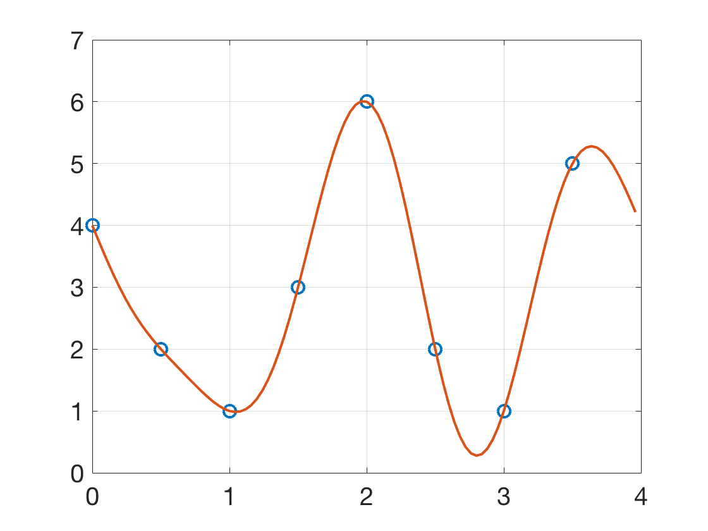

Additional Examples 10.2
1 Use the DFT to find the trigonometric interpolating function for the following data.
\begin{array}{ccccc}
t&0&1/4&1/2&3/4\\
\hline
x&5&10&5&0
\end{array}
The DFT of
\(\left[\begin{array}{c}
5\\10\\5\\0
\end{array}\right] \) is \(\left[\begin{array}{c}
a_0+ib_0\\
a_1+ib_1\\
a_2+ib_2\\
a_3+ib_3
\end{array}\right]=\left[\begin{array}{c}
10\\-5i\\0\\5i
\end{array}\right]
\) as shown in Additional Example 10.1.2. Using Corollary 10.8 with \([c,d]=[0,1]\) and \(a+bi = F_nx\) yields the interpolating polynomial
\begin{eqnarray*}
P_4(x) &=& \frac{a_0}{\sqrt{4}}+\frac{2}{\sqrt{4}}\sum_{k=1}^1\left[ a_k\cos \frac{2k\pi t}{1}-b_k\sin \frac{2k\pi t}{1} \right]+\frac{a_2}{\sqrt{4}}\cos \frac{4\pi t}{1}\\
&=& \frac{10}{2}+0+5\sin 2\pi t = 5+5\sin 2\pi t
\end{eqnarray*}
2 Use dftinterp.m to find the order 8 trigonometric interpolation polynomial for the data and plot along with the data points.
\begin{array}{ccccccccc}
t&0&1/2&1&3/2&2&5/2&3&7/2\\
\hline
x&4&2&1&3&6&2&1&5
\end{array}
The DFT of the data vector \(x\) yields
\(\left[\begin{array}{c}
6\sqrt{2}\\\frac{1}{2}-\frac{1}{\sqrt{2}}+\frac{1}{2}i\\2\sqrt{2}+\sqrt{2}i\\ -\frac{1}{2}-\frac{1}{\sqrt{2}}+\frac{1}{2}i\\
0\\-\frac{1}{2}-\frac{1}{\sqrt{2}}-\frac{1}{2}i\\2\sqrt{2}-\sqrt{2}i \\\frac{1}{2}-\frac{1}{\sqrt{2}}-\frac{1}{2}i
\end{array}\right]. \)
By Theorem 10.6, the data is interpolated by
\begin{eqnarray*}
P_8(t) &=& \frac{1}{\sqrt{8}} \sum_{k=0}^7 a_k\cos \frac{2\pi k (t-c)}{d-c}-b_k\sin \frac{2\pi k (t-c)}{d-c} \\
&=& \frac{1}{\sqrt{8}} \sum_{k=0}^7 a_k\cos \frac{2\pi kt}{4}-b_k\sin \frac{2\pi kt}{4}
\end{eqnarray*}
The dftinterp.m code plots the data and interpolating function as shown below.
